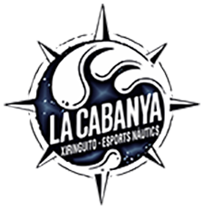

La Cabanya · Web per Tothom

Web per tothom !
Descobreix el nostre nou lloc web inclusiu dissenyat especialment per a tu i per a tothom !
A La Cabanya, hem posat tots els nostres esforços per crear un espai en línia on la inclusió és la protagonista. Sabem que cada usuari és únic i mereix una experiència digital que sigui igualment excepcional.
És per això que hem fet un pas endavant per garantir que totes les persones, independentment de les seves habilitats i capacitats, puguin gaudir plenament del nostre contingut.
Disseny Atractiu i Funcional
El disseny del nostre lloc web és més que estèticament agradable; és altament funcional.
Hem creat una interfície intuïtiva que guia els usuaris a través del nostre contingut de manera fluida.
Els colors, les fonts i el disseny general han estat seleccionats amb cura per oferir una experiència visualment atractiva, accessible i còmoda per a tothom.
Et convidem a explorar La Cabanya i ser part de la nostra comunitat inclusiva.
Junts estem creant un espai on-line on la diversitat √©s celebrada i l'accessibilitat √©s fonamental. Ja sigui que estiguis buscant informaci√≥, entreteniment o surfejar per la gran teranyina que √©s la WWW (üåê Worl Wide Web), el Xiringuito La Cabanya √©s aqu√≠ per a tu.
Uneix-te a nosaltres mentre abracem la inclusivitat en la seva forma més autèntica.
Et donem la benvinguda a una experiència digital que realment abasta tothom!
El nostre desenvolupador :

Les nostres activitats
Les nostres activitats estan adaptades a tots els públics,
de totes les edats, tant individuals com per a grups,
compartint una activitat tots junts (equips d'empreses,
escoles i col·legis, hotels, casals d’estiu, comiats de
solter, operadors turístics, agències de viatges o grups
d’amics) .
Fes un cop d'ull a les nostres üëâ tarifes üëà per a les activitats i el lloguer de material.
-
 - Caiac
- Caiac
-
 - Paddle Surf
- Paddle Surf
-
 - Wakeboard
- Wakeboard
-
 - Vela Lleugera
- Vela Lleugera
-
 - Efoil
- Efoil
-
 - Excursions a Cavall
- Excursions a Cavall
Contacta amb nosaltres,
truca als telèfons següents per conèixer les
disponibilitats i fer la vostra reserva :
-
 · Caiac i Paddle ···
La Cabanya : +34 977 70 02 92
· Caiac i Paddle ···
La Cabanya : +34 977 70 02 92
-
· Wakeboard ···
Wake Park : +34 621 20 24 50
-
· Efoil ···
Neptune : +34 644 73 36 69
- · Vela Lleugera, Multi-Aventura Aquàtica i Excursions a Cavall ··· Consultar a la barra del bar de La Cabanya.
Atreveix-te a provar les nostres activitats de lleure a l’aire lliure i gaudiu de la mar, de l'hàbitat natural, del descobriment i viure l’aventura !

Caiac
Vine i navega amb caiac tot l’any a La Cabanya !
Posem
a la teva disposició el material necessari perquè
navegues amb tranquil·litat i conegues la nostra
badia. T'indicarem la zona de seguretat recomanada en
funció de les condicions meteorològiques.
Tots els nostres caiacs són autobuidables i
insubmergibles.
Podeu navegar amb individual, doble, triple o
quàdruple (2 adults + 2 infants).
Edat: menors
de 12 acompanyats d’un tutor legal.
En funció
del vostre nivell, us podem aconsellar les rutes més
adequades.
QUÈ CAL PORTAR ?
Banyador, Samarreta sintètica o licra,
Protector solar, Calçat que es pugui mullar, Aigua i
Roba de recanvi.

Caiac Pesca
Si la vostra afició és pescar, tenim caiacs
confortables preparats per a l'activitat amb canyers,
respatllers i pots estancs.
Només has de portar
la teva canya, el teu esquer, els teus utensilis i
els consumibles de recanvi per a una bona pesca.
Les
autoritats, eventualment, poden demanar-vos la vostra
llicència de pesca.
CONSELL :
De matí manyana és el millor moment per gaudir
de la pesca, els peixos estan famolencs després de la
nit, la mar està molt plana gairebé sense onatge, el
sol encara no pica molt i els vents solen ser molt
suaus.

Paddle Surf
Vine i navega amb paddle tot l’any a La Cabanya
!
Posem a la teva disposició el material
necessari perquè navegues amb tranquil·litat i
conegues la nostra badia. T'indicarem la zona de
seguretat recomanada en funció de les condicions
meteorològiques.
Tots les nostres planxes són
insubmergibles, ideals per practicar en grup el
Paddle Ioga.
Podeu navegar amb individual o en
grup amb el nostre súper Paddle XXL, als
enfants els hi encanta !.
Edat: menors de 12
acompanyats d’un tutor legal.
En funció del
vostre nivell, us podem aconsellar les rutes més
adequades.
QUÈ CAL PORTAR ?
Banyador, Samarreta sintètica o licra,
Protector solar, Calçat que es pugui mullar, Aigua i
Roba de recanvi.

Pedalos
Dirigits a tota mena de persones, els pedalos o
hidropedals són embarcacions impulsades per pedals
que permeten navegar a prop de la costa, relaxar-se i
gaudir prenent el sol mentre es contempla el paisatge
des d'una embarcació molt estable.
És una
activitat que es pot desenvolupar en grup o
individualment. Només cal un banyador, una bona
protecció solar i un pedaleig suau i uniforme.
Una bona opció per passar una bona estona amb
família
per fer temps i gana per a quan arribi la paella o la
fideuada.
Vine i navega amb pedalo tot l’any a La Cabanya
!
Wakeboard
Si t'agrada sentir l'adrenalina, al nostre Wake Parc
tenim diferents recorreguts, amb 3 línies que
s'adapten a tots els nivells per gaudir d'una bona
experiència.
· LÍNIA 1 - INICIACIÓ : 70
metres de línia per a la teva iniciació amb el
wakeboard, aquesta línia també disposa de diversos
mòduls bàsics.
· LÍNIA 2 - AFICIONAT :
120 metres de línia, 25 metres d'amplada, dos
kickers, un doble up pla de 7 metres de llarg, un
flatbar de 12 metres de llarg i 70 centímetres
d'alçada, tot pensat perquè gaudeixis d'un bon
jibbing.
· LÍNIA 3 - LITTLE POOL : 32
metres de piscina superior amb platja per a una bona
arrencada i 70 metres de piscina inferior. Podreu
gaudir de dos rails de 14 metres i 3,5” de passamà
d'inox, per als riders més experimentats.
eFoil
T'imagines la sensació de volar per damunt
l'aigua ?
Doncs ara ho pots fer realitat amb l'eFoil.
En què consisteix ?
El Foil és una modalitat d'esport nàutic que
consisteix a volar navegant sobre l'aigua. L'eFoil és
una planxa amb un motor elèctric i pot assolir uns 40
km per hora, controlada mitjançant un comandament a
distància.
Quan estàs volant a l'eFoil sents
silenci a l'aigua, sense fricció, i això genera una
sensació de pau, llibertat i independència que no et
proporcionen altres esports nàutics. Qualsevol moment
de l'any (inclòs l'hivern) és bo per practicar la
modalitat d'eFoil, l'important és anar ben equipat
amb una combinació de neoprè i un casc confortable
que suri.
Atreveix-te a volar sobre l'aigua, sent la
llibertat !
Multi-Aventura Aquàtica
Gaudeix i refresca't amb la nostra multiaventura
aquàtica amb activitats variades súper divertides i
molt fresquetes perquè gaudeixis de l'estiu mentre et
diverteixes.
La canalla s'ho passarà pipa, no voldran sortir
de l'aigua !
Consultar a la barra les tarifes i disponibilitat

Vela Lleugera
La nostra badia és un paradís per a la pràctica de la
vela lleugera amb una navegació segura i vents
portants que sempre t'empenyen cap a un punt de terra
ferma.
Sentir-se empès per les forces de la natura et
despertarà sensacions a flor de pell.
Embarcat a l'aventura !, amb aquesta activitat et sentiràs un veritable
explorador d'espais naturals dels Alfacs.
Consultar a la barra les tarifes i disponibilitat

Excursions a Cavall
Una trobada sublim amb la natura !. Sent la
connexió amb el mar i els cavalls a les nostres
excursions de platja i ribera.
Viu la passió de
la platja a cavall : Un passeig inoblidable on el
sol, la sorra i el mar es fusionen amb l'elegància
del pas a cavall.
Converteix els teus somnis en
empremtes a la sorra : Descobreix la felicitat de
muntar a cavall a la costa, on l'aventura es barreja
amb la tranquil·litat.
Una travessia màgica cap
a la plenitud : Viu l'experiència inigualable de
cavalcar per la platja, un instant etern de connexió
amb la natura.
Consultar a la barra les tarifes i disponibilitat

Hamaking
Una activitat d'alt risc, però apta per a tots
els públics, sobretot per als que ja tenim una
edat.
Després d'un matí de platja amb moltes
activitats i d'haver engolat un bon àpat, desitjaràs
agenciar-te una hamaca per pair-ho tot sota l'ombra
de la pineda.
Correràs un gran risc de sentir-te atret per una bona
migdiada i no voler marxar mai de La Cabanya.
Pots
escollir entre l'hamaking o la zona chillout per
reposar o relaxar el teu esperit.
Bon repòs !
Activitat gratuita que t'oferim a La Cabanya
Llista de preus
-
Caiac individual
- 1 h. ... 10€
- 2 h. ... 13€
- 3 h. ... 15€
-
Caiac doble/triple
- 1 h. ... 15€
- 2 h. ... 20€
- 3 h. ... 25€
-
Paddle Surf
- 1 h. ... 10€
- 2 h. ... 15€
- 3 h. ... 20€
- Paddle XXL · 1 h. ... 60€
-
Pedalos
- 1 h. ... 20€
- 2 h. ... 30€
- 3 h. ... 40€
Llista de preus
-
Wakeboard
- 15 min. línia ... 20€ + material ... 5€
- 30 min. línia ... 30€ + material ... 10€
- 60 min. línia ... 50€ + material ... 15€
-
Cursos eFoil
- 30 min. ... 45€
- 1 h. ... 70€
- 2 h. ... 110€
-
Altres Activitats
- Vela Lleugera
- Excursions a Cavall
- Multi-Aventura Aquàtica
Consultar la disponibilitat i els preus a la barra del bar.
-
Reserves
- Caiac, Paddle Surf i Pedalos : La Cabanya +34 977 74 02 92
- Wakeboard : Wake Park +34 621 20 24 50
- eFoil : Neptune +34 644 73 36 69